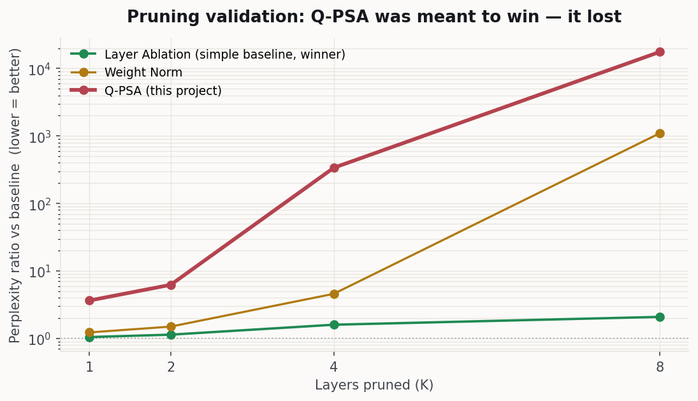
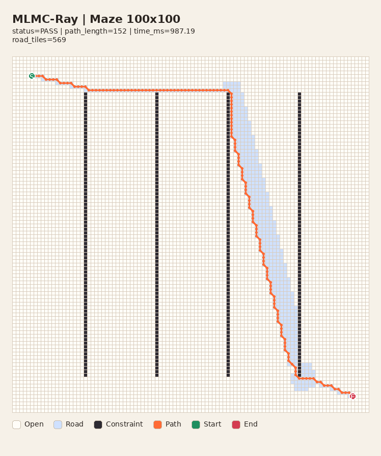
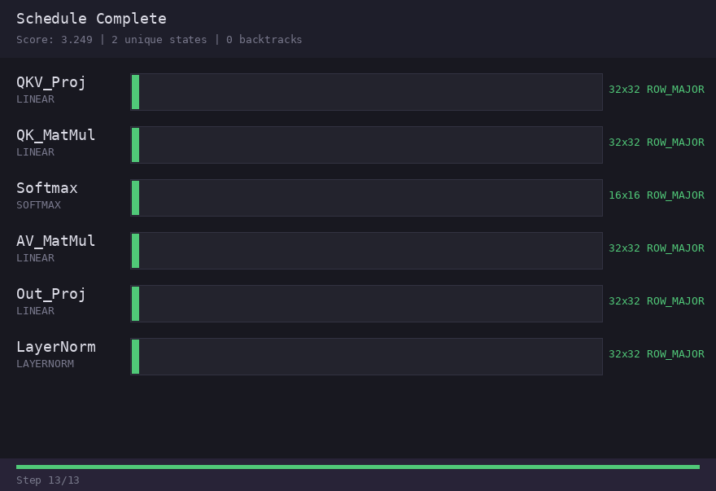

My background is in operations, business planning, and data analysis — I start from the problem and the plan. Then I design and build the system to test it against real constraints, with AI agents as my engineering force-multiplier. I own both ends: the product judgment and the working system that proves it. 제 출발점은 운영·사업기획·데이터 분석입니다 — 문제와 기획에서 시작합니다. 그다음 직접 시스템을 설계·구현해 현실 제약에 부딪혀 검증하며, AI 에이전트를 엔지니어링 역량의 증폭기로 씁니다. 제품 판단과 그것을 증명하는 동작하는 시스템, 양쪽을 모두 책임집니다.
"Memory is not a log. Memory is compacted meaning." "기억은 로그가 아니다. 기억은 압축된 의미다."
I'm not a pure-play backend or frontend engineer, and not a low-level AI researcher. My edge is the span between them — product planning and system design, plus the engineering to actually build it, with AI agents doing the heavy lifting under my direction. 순수 백엔드·프론트엔드 엔지니어도, 저수준 AI 연구자도 아닙니다. 제 강점은 그 사이의 폭입니다 — 제품 기획과 시스템 설계, 그리고 그것을 실제로 구현하는 엔지니어링까지. 무거운 작업은 제 지휘 아래 AI 에이전트가 맡습니다.
AI agents draft code, generate candidates, and audit work at speed. I set the direction, make the engineering calls, and own whether the result is right. The capability is the pairing — and it shows in how I direct it, not in a claim.AI 에이전트가 빠르게 코드 초안·후보 생성·감사를 맡습니다. 저는 방향을 정하고 엔지니어링 판단을 내리며 결과가 옳은지를 책임집니다. 역량은 그 협업 자체이고, 주장이 아니라 그것을 어떻게 지휘하는지에서 드러납니다.
Prototypes exist to test whether an idea can survive cost, stability, and operational friction — not to demo.프로토타입은 데모가 아니라, 아이디어가 비용·안정성·운영 마찰을 견디는지 검증하기 위해 존재합니다.
If a system can't prove its value with measurable results, I document the failure and move on.측정 가능한 결과로 가치를 입증하지 못하면, 실패를 기록하고 다음으로 넘어갑니다.
Failed experiments, trade-offs, and dead ends are often the most useful inputs for the next design.실패한 실험·트레이드오프·막다른 길이 다음 설계의 가장 유용한 입력입니다.
Three public PoCs — each one piece of a verified Agentic-RAG: a memory layer, a provider-neutral execution contract, and a verification gate. I built and validated each in the open. Combined, they're the blueprint for the system I'm now building at production scale in my current role (Current work →). Told as decisions, not features: what I decided, why, and what role AI played. 세 개의 공개 PoC — 각각 검증형 Agentic-RAG의 한 조각입니다: 메모리 레이어, provider-neutral 실행 계약, 검증 게이트. 셋을 공개적으로 만들고 검증했습니다. 합치면 지금 실무에서 실무 규모로 구축 중인 시스템의 설계도가 됩니다(현재 실무 →). 기능이 아니라 의사결정으로 풀었습니다 — 무엇을 결정했고, 왜 그랬으며, AI가 어떤 역할을 했는지.
A dedicated long-term memory layer for AI assistants — not a log of conversations, but compacted meaning that survives across sessions, exposed over MCP so any client can share the same memory model. AI 어시스턴트를 위한 전용 장기 메모리 레이어 — 대화 로그가 아니라 세션을 넘어 남는 '압축된 의미'를, 어떤 클라이언트든 같은 메모리 모델을 공유하도록 MCP로 노출합니다.
01Memory is compacted meaning, not a conversation log기억은 대화 로그가 아니라 압축된 의미다
Most "memory" systems treat chat transcripts as the long-term unit. This one instead models a distilled, structured, time-aware memory as the primary unit: the client that understood the conversation is expected to decide what deserves saving. That is an operating contract, not a server-side ban on arbitrary text — memory quality is decided at save time. Client-driven compaction then builds day → week → month → year digests.대부분의 '메모리' 시스템은 대화 기록을 장기 단위로 삼습니다. 이 시스템은 대신 증류된 구조적·시간 인식 memory를 기본 단위로 모델링하고, 대화를 이해한 client가 무엇을 저장할지 결정하게 합니다. 이는 임의 텍스트를 서버가 금지한다는 뜻이 아니라 운영 계약입니다 — 기억 품질은 저장 시점에 결정됩니다. 이후 client-driven compaction이 일→주→월→년 digest를 만듭니다.
"Memory is not a log. Memory is compacted meaning.""기억은 로그가 아니다. 기억은 압축된 의미다."
02MongoDB is authoritative; the vector store is a rebuildable cacheMongoDB가 권위 저장소이고, 벡터 store는 재구성 가능한 캐시다
I split the architecture in two: MongoDB is the durable source of truth, while ChromaDB is a derived vector cache that can be rebuilt from Mongo. "Source of truth" does not mean immutable — memories can be updated or deleted. The current handlers do not fully synchronize every Chroma document inline, so reindex/rebuild remains an operational requirement; that is exactly why the cache never outranks Mongo.아키텍처를 둘로 나눴습니다: MongoDB는 영속적인 source of truth이고, ChromaDB는 Mongo 기준으로 재구축하는 파생 벡터 캐시입니다. 여기서 source of truth는 불변이라는 뜻이 아닙니다 — memory는 update/delete할 수 있습니다. 현재 handler는 모든 Chroma 문서를 inline으로 완전 동기화하지 않아 reindex/rebuild가 운영상 필요하며, 바로 그래서 캐시가 Mongo보다 권위를 갖지 않습니다.
"The vector DB is a cache. The source of truth is the durable store.""벡터 DB는 캐시다. 진실은 영속 저장소에 있다."
03The server coordinates; it never secretly summarizes서버는 조율할 뿐, 몰래 요약하지 않는다
The server stores, selects candidates, and coordinates lifecycle — but it performs no hidden LLM summarization and never auto-guesses sensitivity from keywords. The agent sets sensitivity explicitly; meaning extraction is done by the client that actually understood the text. The machine coordinates; the understanding party decides what a memory means.서버는 저장·후보 선택·생명주기 조율을 맡지만, 숨은 LLM 요약을 하지 않고 키워드로 민감도를 자동 추측하지 않습니다. agent가 sensitivity를 명시하고, 의미 추출은 텍스트를 실제로 이해한 클라이언트가 합니다. 기계는 조율하고, 이해한 주체가 기억의 의미를 결정합니다.
04Sensitivity is explicit metadata; redaction is an explicit policy민감도는 명시적 메타데이터, 가림은 명시적 정책이다
The agent sets sensitivity explicitly at save time instead of relying on keyword guesses. Recall redacts high items only when hide_sensitive_on_recall=true; include_sensitive=true then explicitly expands them. The honest boundary matters: the implementation ships with hiding disabled by default, so an operator must enable the policy. The mechanism is safe-capable, not safe-by-default.agent가 저장 시 sensitivity를 키워드 추측 대신 명시합니다. Recall은 hide_sensitive_on_recall=true일 때만 high 항목을 가리고, include_sensitive=true로 명시적으로 펼칩니다. 중요한 실제 경계가 있습니다: 구현의 가림 정책은 기본값이 비활성화라 운영자가 직접 켜야 합니다. 안전 정책을 지원하지만 safe-by-default는 아닙니다.
How it connects:연결점: This truth-vs-cache split is the seed of the verified RAG I now build at work ("the vector DB is a cache; the source snapshot is the truth"), and the same division of labor runs through everything: the deterministic layer coordinates, the understanding party decides.이 진실/캐시 분리가 지금 회사에서 만드는 검증형 RAG의 씨앗입니다("vector DB는 캐시, source snapshot이 진실"). 그리고 같은 역할 분담이 제가 만드는 모든 것을 관통합니다 — 결정론적 레이어가 조율하고, 이해한 주체가 결정합니다.
05Named the boundary: a memory server cannot make a client remember경계를 명시했다: 메모리 서버가 클라이언트에게 기억을 강제할 수는 없다
The MCP contract is implemented, but tool availability is not tool adoption. A client's system prompt or built-in file memory can outrank the server's prompt; a poorly rewritten recall query can also bury the right memory. I kept this as an explicit operating boundary instead of pretending the server controls agent behavior: deployment must define memory precedence in the client's own configuration, and cross-agent memories carry source_agent / source_client when provenance matters. Client guidance →MCP 계약은 구현돼 있지만, 도구가 있다는 것과 실제로 쓰인다는 것은 다릅니다. 클라이언트의 system prompt나 내장 파일 메모리가 서버 prompt보다 우선할 수 있고, 잘못 재작성된 recall query가 맞는 기억을 검색 순위 아래로 밀 수도 있습니다. 서버가 agent 행동까지 통제하는 척하지 않고 이를 명시적 운영 경계로 남겼습니다: 배포 시 클라이언트 자체 설정에 메모리 우선순위를 정하고, 출처가 중요한 cross-agent 기억에는 source_agent / source_client를 함께 저장합니다. 클라이언트 가이드 →
"The server can expose memory; only the client can choose to use it.""서버는 기억을 제공할 수 있지만, 그것을 쓸지는 클라이언트가 결정한다."
CI for hiring assessments — it doesn't evaluate the candidate, it evaluates the assessment design itself. 채용 과제를 위한 CI — 응시자가 아니라 평가 설계 자체를 평가합니다.
The first-class user is an AI agent. The CLI is therefore a product contract, not a human convenience: every command returns a stable JSON core (status, exit_code, command, next_actions), agents can discover each surface through schema --command, and model integrations sit behind a framework-neutral AgentRunner. That upfront constraint makes the harness swappable and reliably callable rather than tied to one SDK.1차 사용자는 사람이 아니라 AI agent입니다. 그래서 CLI는 사람을 위한 편의가 아니라 제품 계약입니다: 모든 명령이 안정된 JSON 코어(status, exit_code, command, next_actions)를 반환하고, agent는 schema --command로 각 인터페이스를 스스로 발견하며, 모델 연동은 framework-neutral AgentRunner 뒤에 둡니다. 이 선행 제약 덕분에 harness가 특정 SDK에 묶이지 않고 교체 가능하며 안정적으로 호출됩니다.
01Reframed the problem: judge the design, not the candidate문제 재정의: 응시자가 아니라 설계를 평가한다
Reading one assessment round and its retrospective, I saw a systemic gap in the assessment infrastructure — recommended hours vs. real depth, "optional" items that were actually the deciding signal, grading criteria absent from the public brief. So I targeted the upstream failure, not the candidate.한 라운드의 응시·회고 자료를 정독하니 개별 평가자의 실수가 아니라 평가 인프라 자체의 시스템적 공백이 보였습니다 — 권장 시간 vs 실제 작업 깊이, 사실상 결정적이던 "선택" 항목, 공개 명세에 없던 채점 기준. 그래서 응시자가 아니라 그 위쪽 단계의 실패를 겨눴습니다.
"This tool does not evaluate the candidate. It evaluates the assessment design itself.""이 도구는 응시자를 평가하지 않는다. 평가 설계 자체를 평가한다."
02Drew the scope by what I refused to build'거부'로 범위를 그었다
I rejected three proposed rules on principle (L3/L8/L9): they would constrain an evaluator's legitimate discretion rather than catch the undisclosed criteria the tool exists for. A PoC's default failure mode is scope creep; each refusal keeps the tool explainable in one sentence.제안된 세 규칙(L3/L8/L9)을 원칙적으로 거부했습니다. 그것들은 응시자가 볼 수 있는 평가자의 정당한 재량을 막을 뿐, 이 도구가 잡으려는 공개되지 않은 기준을 막지 못하기 때문입니다. PoC의 기본 실패 모드는 scope creep이고, 각 거부가 도구를 한 문장으로 설명 가능하게 유지합니다.
"A tool is defined as much by what it refuses to do as by what it does.""도구는 하기로 한 것만큼이나 하지 않기로 한 것으로 정의된다."
03The machine analyzes; only the human judges기계는 분석만, 판단은 사람만
If the deterministic checker returned pass/fail, a linter for assessment design would quietly become an automated judge. So check only produces provisional findings; a separate gate reads the human's final review. A blocking verdict fires for only three design-invalidating types.결정론적 checker가 pass/fail을 반환하면, 평가 설계의 linter가 조용히 자동 심판자로 변질됩니다. 그래서 check는 provisional finding만 만들고, 별도의 gate가 사람의 최종 검토를 읽습니다. 차단 판정은 설계를 무효화하는 세 유형에만 발화합니다.
04Split a label that was quietly lying조용히 거짓말하던 라벨을 쪼갰다
A classifier returned validated after checking only schema + audit-trace — while strict reference grounding was still unimplemented. An AI audit caught it by feeding a run with a dangling reference and a fabricated quote; the classifier passed it with zero errors. I split the state into structurally_validated vs validated.분류기가 schema와 audit-trace만 확인하고 validated를 반환하고 있었습니다 — 엄격한 reference grounding은 아직 미구현인데도요. AI 감사가 존재하지 않는 참조와 날조된 인용을 가진 run을 찔러 이를 잡아냈고, 분류기는 에러 0개로 통과시켰습니다. 그래서 상태를 structurally_validated와 validated로 분리했습니다.
"A label that lies is worse than one more label.""거짓말하는 라벨이 라벨 하나 더 있는 것보다 나쁘다."
05Had AI audit my own work — and allowed verdicts to be withdrawnAI에게 내 작업을 감사시키고, verdict 철회까지 허용했다
A green test suite only proves the code matches the tests, not the spec. So I made independent verification a first-class artifact with two-way regression guards, and treated a missing guard as a blocker. When an early Rule 3 record found an incomplete boundary check, I withdrew and reissued the verdict.green 테스트는 코드가 테스트대로 작동함만 증명할 뿐, 명세대로임을 보장하지 않습니다. 그래서 독립 검증을 1급 산출물로 삼고 양방향 회귀 가드를 적용했으며, 누락된 가드는 차단 사유로 다뤘습니다. 초기 Rule 3 기록이 불완전한 경계 검사를 발견했을 때는 verdict를 철회하고 재발행했습니다.
AI's role:AI의 역할: AI agents (Claude Code / Codex / Gemini) are the tool's primary callers and its independent auditors — designed in, with a stable CLI contract. I stayed the decider with commit authority.AI 에이전트(Claude Code / Codex / Gemini)가 이 도구의 1차 호출자이자 독립 감사자입니다 — 안정적인 CLI 계약으로 설계에 내장. 저는 commit 권한을 가진 결정자로 남았습니다.
"I'd rather record a withdrawn verdict than ship a green bar that lies.""거짓말하는 green bar를 내보내느니 철회된 verdict를 기록하겠다."
06Stated the limit honestly: this is still a PoC한계를 정직하게: 아직 PoC다
The deterministic core and review/verdict flow are implemented and validated; the live LLM SDK runner is deliberately deferred. The current results validate wiring and grounding on a deterministic + mock path — and the README's diagram and status table draw that boundary on purpose, instead of overclaiming.결정론적 코어와 review/verdict 흐름은 구현·검증했지만, live LLM SDK runner는 의도적으로 보류했습니다. 현재 결과는 deterministic + mock 경로의 배선·grounding 검증이며, README의 다이어그램과 상태 표가 그 경계를 과장 없이 일부러 그려둡니다.
Does provider-neutral "Role IR" lowering beat hardcoded prompt templates for structured extraction? A POC built to test exactly that one hypothesis — carved out of a larger product thesis: that AI's next bottleneck isn't the model, it's giving it a verifiable, portable role. provider-neutral "Role IR" lowering이 하드코딩 프롬프트보다 structured extraction에 나은가? 정확히 그 하나의 가설만 검증하려 만든 POC입니다 — 더 큰 제품 비전(AI의 다음 병목은 모델이 아니라 모델에게 검증 가능하고 이식 가능한 역할을 부여하는 능력)에서 떼어낸 조각입니다.
01Minimized scope to a single falsifiable hypothesis단일 반증 가능 가설로 범위를 최소화했다
I deliberately separated the large platform vision from the POC. The runnable slice is just role_ir.yaml → lowering → one backend call → assurance, testing one claim. Proving any one of its sub-questions gives the project independent value — no need to validate everything at once.거대한 플랫폼 비전과 POC를 의도적으로 분리했습니다. 실행 슬라이스는 role_ir.yaml → lowering → 단일 백엔드 호출 → assurance뿐이고, 하나의 주장만 검증합니다. 하위 질문 중 하나만 증명돼도 프로젝트는 독립적 가치를 가지므로, 한 번에 전부 검증할 필요가 없습니다.
02Enforced experiment fairness against my own hypothesis내 가설에 불리하게, 실험 공정성을 강제했다
Initially only the POC had a retry budget. I gave the baseline the same retries (match_poc). That alone re-classified one model's apparent "slight edge" into a tie. I also split unconditional success from strict quality so operability couldn't be mistaken for quality.처음엔 POC만 retry 예산을 가졌습니다. baseline에도 동일한 retry를 부여했습니다(match_poc). 그것만으로 한 모델의 "근소 우세"가 동급으로 재판정됐습니다. 무조건부 success와 strict quality도 분리해, 운영성이 품질로 오인되지 않게 했습니다.
"A fair engineering comparison: same model, same output contract, same assurance, same case set.""공정한 engineering comparison — 같은 모델·출력 계약·assurance·케이스셋."
03Refused to cherry-pick the favorable result유리한 결과를 cherry-pick하지 않았다
On the easy eval-8 set IR looked slightly ahead, but on hard distractor sets there was no clean IR win — false positives became a shared failure family across both paths. I published the uncomfortable hard-set results and reframed the conclusion: not "IR wins," but "the gain/loss splits by model, domain, and difficulty."쉬운 eval-8에선 IR이 약간 앞서 보였지만, 하드 distractor 셋에선 깔끔한 IR 승리가 없었습니다 — false positive가 양쪽 공통의 실패 패턴이 됐습니다. 불편한 하드셋 결과를 그대로 공개하고 결론을 재정의했습니다: "IR 승리"가 아니라 "모델·도메인·난도에 따라 이득과 손해가 갈린다."
AI's role:AI의 역할: One provider-neutral Role IR lowers to many LLM backends (OpenAI / Groq / Gemma / OpenRouter), avoiding vendor lock-in; a 4-stage assurance layer (structure / evidence / policy / role) validates the model output rather than trusting it.하나의 provider-neutral Role IR이 여러 LLM 백엔드(OpenAI / Groq / Gemma / OpenRouter)로 lowering되어 벤더 락인을 피하고, 4단계 assurance(구조 / 근거 / 정책 / 역할)가 모델 출력을 신뢰가 아니라 검증으로 다룹니다.
04Called the compiler what it is: a draft generator컴파일러를 있는 그대로 불렀다: 초안 생성기
The experiments above use a human-authored role_ir.yaml. The current deterministic compiler can extract an objective and schema constraints from role.md + output_schema.json, but it cannot yet prove semantic equivalence or adopt its output directly at runtime. So I did not call it an AI role compiler: it generates a reviewable draft, and a person approves the IR. The full product thesis remains larger than the slice that was actually tested.위 실험은 사람이 작성한 role_ir.yaml을 사용했습니다. 현재 deterministic compiler는 role.md + output_schema.json에서 목적과 schema 제약을 추출할 수 있지만, 의미적 동등성을 증명하거나 결과를 runtime에 바로 채택하지는 못합니다. 그래서 이를 AI 역할 컴파일러라고 부르지 않았습니다: 검토 가능한 초안을 만들고, 사람이 IR을 확정합니다. 전체 제품 비전은 실제로 검증한 슬라이스보다 여전히 큽니다.
"The compiler drafts the role; it does not certify the meaning.""컴파일러는 역할 초안을 만들 뿐, 의미를 인증하지 않는다."
Put the three together — memory, a provider-neutral execution contract, and a verification gate — and you have a verified Agentic-RAG. That synthesis is exactly what I build at production scale in my current role. See the current work → 세 조각 — 메모리, provider-neutral 실행 계약, 검증 게이트 — 을 합치면 검증형 Agentic-RAG가 됩니다. 그 통합이 바로 지금 실무에서 실무 규모로 만들고 있는 것입니다. 현재 실무 보기 →
This is what AI-native engineering looks like in practice: framing the problem, directing agents, auditing their output, and keeping one source of truth. The verification records and the judgment behind each call are the evidence — not the claim. The same pattern runs through all three PoCs above.이것이 실제 AI-native 엔지니어링의 모습입니다 — 문제를 프레이밍하고, 에이전트를 지휘하고, 산출물을 감사하고, 단일 진실 공급원을 유지합니다. 검증 기록과 그 뒤의 판단이 주장이 아니라 증거입니다. 위 세 PoC에 공통으로 흐르는 패턴입니다.
I frame the problem and the decision; the agent drafts, implements, and generates candidates. The judgment of "is this right?" stays with me.문제와 결정은 제가 프레이밍하고, 에이전트는 초안·구현·후보 생성을 맡습니다. "이게 맞나?"라는 판단은 제가 가집니다.
Verification records are first-class artifacts. I have AI probe its own work with dangling references and fabricated evidence — and let it fail.검증 기록을 1급 산출물로 둡니다. AI가 자기 작업물을 존재하지 않는 참조·날조된 근거로 찔러보게 하고, 실패하면 실패로 둡니다.
Guard against both under-strict (the bug returns) and over-strict (valid cases get flagged). A missing guard blocks the verdict.under-strict(버그 재발)와 over-strict(정상 케이스 오탐) 양쪽을 막습니다. 가드가 빠지면 verdict를 차단합니다.
With multiple agents, specs silently fork. So any contract change — even small — pays the cost of editing the canonical plan, not a side note.여러 에이전트가 일하면 명세가 조용히 갈라집니다. 그래서 작은 계약 변경도 곁가지 노트가 아니라 정본 계획서를 편집하는 비용을 치릅니다.
It's logged, not claimed — with substance, not just a status. Across the public PoCs the trails are dated and separated by purpose: judgment, independent verification, and the daily working logs behind each. Two real excerpts: 주장이 아니라 기록입니다 — 상태값이 아니라 내용까지. 공개 PoC들에서 자취를 날짜별로, 목적별로 분리해 남깁니다 — 판단, 독립 검증, 그리고 그 뒤의 일일 워킹로그. 실제 발췌 두 개:
Verification record · Assessment · 2026-05-27 — an AI-run audit (Claude Code) of my own work, which I requested as owner:검증 기록 · Assessment · 2026-05-27 — owner인 제가 요청해 AI(Claude Code)가 제 작업을 감사한 기록:
"This record supersedes the prior record's PASS verdict — the earlier 'default policy fallback' claim did not match the implementation.""본 기록은 직전 기록의 합격 판정을 대체한다 — 직전의 '기본 policy fallback' 주장이 실제 구현과 맞지 않았다."
Working log · Assessment · 2026-06-14 — the logs keep the owner decisions and guardrails, not just diffs:워킹로그 · Assessment · 2026-06-14 — 로그는 diff만이 아니라 owner 결정과 가드레일까지 남깁니다:
"Produce a fully synthetic assignment — no real company/applicant data. Domain (owner decision): a synthetic PoC that mirrors the reference's mechanics without copying it.""완전 합성 과제 생성 — 실제 회사/응시자 데이터 없음. 도메인(owner 결정): 레퍼런스의 메커니즘만 모사하고 복제하지 않은 합성 PoC."
Full public trails — Assessment: decisions · verifications · working logs. Harness IR: design decisions · working logs. 전체 공개 기록 — Assessment: 판단 · 검증 · 워킹로그. Harness IR: 설계 결정 · 워킹로그.
A /test-centered workbench that separates warp correction, anchor generation, Grounding DINO + SAM segmentation, and post-processing so each failure can be inspected. The route was earned: four SAM-prompt strategies and a vision-LLM coordinate approach failed before OCR + contour + rough vision ROI became the practical hybrid. This is not a production-validated automatic extractor; its sharpness/noise metrics compare settings, not absolute visual quality, and cleanup cannot recover foreground that segmentation missed. Troubleshooting archive →warp 보정, anchor 생성, Grounding DINO + SAM segmentation, 후처리를 분리해 실패를 각각 관찰하는 /test 중심 워크벤치입니다. 이 경로는 설계된 게 아니라 얻어낸 것입니다: SAM prompt 전략 4개와 vision LLM 좌표 접근이 실패한 뒤 OCR + contour + 대략적 vision ROI가 현실적인 hybrid가 됐습니다. 이는 프로덕션 검증을 마친 자동 추출기가 아닙니다. sharpness/noise 지표는 설정 비교용이지 절대적 시각 품질 판정이 아니며, 후처리는 segmentation이 놓친 전경을 복구하지 못합니다. 트러블슈팅 아카이브 →
I value the decision to stop as much as the decision to ship.출시 결정만큼이나 멈추는 결정도 중요하게 봅니다.

Q-PSA (red) vs a simple baseline — perplexity explodes as more layers are pruned. Lower is better; the gap is why I killed it.Q-PSA(빨강) vs 단순 베이스라인 — 레이어를 더 제거할수록 perplexity가 폭발. 낮을수록 좋으며, 이 격차가 프로젝트를 종료한 이유입니다.
Discrete perturbation to estimate layer importance in quantized LLMs.양자화 LLM의 레이어 중요도를 discrete perturbation으로 추정.
Decision: Killed at Phase 1 — pruning the bottom-ranked layer raised PPL 3.65× with Q-PSA versus 1.05× with Layer Ablation, while scoring took 155 minutes vs 7 seconds (~1,300× slower).Phase 1에서 종료 — 가장 덜 중요하다고 본 레이어 하나를 제거했을 때 Q-PSA는 PPL이 3.65배, Layer Ablation은 1.05배였고, 점수 산출은 155분 vs 7초(약 1,300배)였습니다.
Why it failed: perturbation sensitivity ≠ layer importance, and a gradient-free GGUF platform blocked the structural experiments needed to rescue the hypothesis. What survived was more useful than the method: Layer Ablation as a fast importance metric, a reusable in-memory GGUF perturbation pipeline, and explicit kill criteria. Full results →실패 이유: perturbation 민감도 ≠ 레이어 중요도, 그리고 gradient-free GGUF 플랫폼이 가설을 살리기 위한 구조 실험을 막았습니다. 방법론보다 더 쓸모 있게 남은 것은 빠른 중요도 지표인 Layer Ablation, 재사용 가능한 in-memory GGUF perturbation 파이프라인, 명시적 kill criteria였습니다. 전체 결과 →

The ray variant finds a full 163-step path where plain WFC stalls. It demonstrates recovery on this maze, not a general connectivity guarantee.ray 변형이 plain WFC가 막히는 이 미로에서 163-step 경로를 찾아냅니다. 이 사례의 복구 결과이지, 일반적인 연결성 보장은 아닙니다.
Replacing A* pathfinding with geometry-guided Wave Function Collapse.A* 경로탐색을 geometry-guided WFC로 대체 시도.
Insight: Found the structural mismatch between local consistency and global connectivity; stopped treating it as a standalone pathfinder.local consistency와 global connectivity의 구조적 불일치를 확인하고, 단독 pathfinder로 보는 것을 중단.
The honest pivot is still a research direction, not a validated reducer: Circle-WFC could propose corridors, anchors, or road zones, while A* or JPS computes the final path and owns complex topology. Full result →정직한 피벗은 아직 검증된 reducer가 아니라 후속 연구 방향입니다. Circle-WFC가 corridor·anchor·road zone 후보를 만들고, A*나 JPS가 최종 경로와 복잡한 topology를 맡는 구조입니다. 전체 결과 →

Final attention-block schedule — on the synthetic 12KB-SRAM benchmark, WFC matches exact dynamic programming. Search correctness on this case is validated; production advantage is not.어텐션 블록의 최종 스케줄 — 가상 12KB-SRAM 벤치마크에서 WFC가 exact dynamic programming과 일치합니다. 이 사례의 탐색 정확성은 확인됐지만, 프로덕션 우위는 아닙니다.
Constraint-driven AI compiler scheduling R&D.제약 기반 AI 컴파일러 스케줄링 R&D.
Result: Matched Exact DP's optimum on the benchmark — but Exact DP already solves it in ~7–10ms, so the WFC speed difference has no practical value.벤치마크에서 Exact DP 최적값과 일치 — 하지만 Exact DP도 이미 약 7–10ms에 풀어 WFC의 속도 차이는 실질적 가치가 없습니다.
The useful boundary was the cost model: its average correlation with measured GPU timing was only Spearman ρ=+0.52 — directional, not reliable enough for production scheduling. The differentiating 12KB SRAM spec exists on no real GPU; with A100/H100-scale SRAM the benchmark becomes trivial. Better calibration would require diverse hardware profiling data beyond this software-only experiment. Full result →유의미한 경계는 cost model이었습니다. 실제 GPU timing과의 평균 상관은 Spearman ρ=+0.52로, 방향성은 있지만 프로덕션 스케줄링 판단에는 부족했습니다. 차별화를 만든 12KB SRAM 스펙은 실제 GPU에 없고, A100/H100 규모 SRAM에선 문제가 trivial해집니다. 더 나은 교정에는 이 소프트웨어 실험 범위를 넘는 다양한 하드웨어 profiling 데이터가 필요합니다. 전체 결과 →
Corporate work in live production environments — NLP services, large-scale generation pipelines, and constraint-driven automation. Hands-on engineering shipped under real constraints; no public repos, so I tell each as the decision behind it. 실제 프로덕션 환경의 현업 작업 — NLP 서비스, 대규모 생성 파이프라인, 제약 기반 자동화. 현실 제약 아래 직접 구현해 납품한 엔지니어링이며, 공개 repo가 없어 각각을 '그 뒤의 판단'으로 풀어 정리했습니다.
Open to conversations about AI product work, PoCs, and feasibility validation.AI 제품 작업, PoC, 실현 가능성 검증에 대한 대화는 언제든 환영합니다.